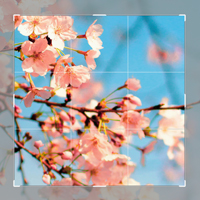
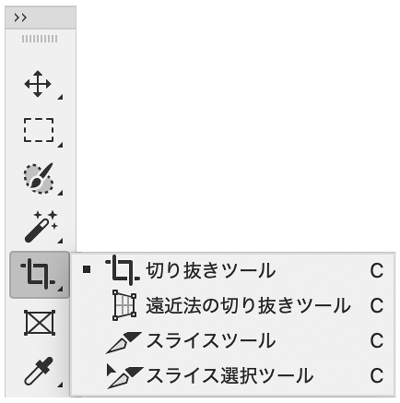
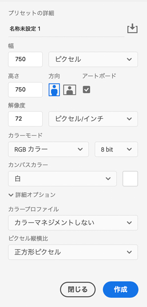
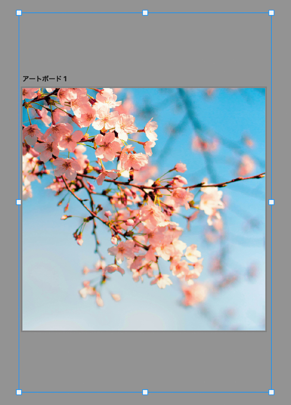
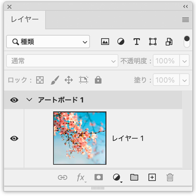

写真を必要な大きさで書き出し

- HTMLページ内に挿入する大きさで書き出す
切り抜きツール

オプションバーで大きさを指定
- スマートフォンがレティナディスプレイのため「ポートレイト幅 X 2」の横幅にする
- 最低幅「375px X 2 = 750px」があれば、スマートフォン横幅サイズできれいに表示されます
- それ以外にも、元画像の大きさにより「ヒーローイメージ」のようなPC幅に適応させるトリミングも可能です
- ただし、複数枚同じサイズの画像を作成する場合は、以下の方法が効率的です
新規ドキュメントを作成
- 必要な大きさの「アートボード」を作成
- その上に配置して「必要な部分を移動してトリミング」（Ctr + T）
- 確定


